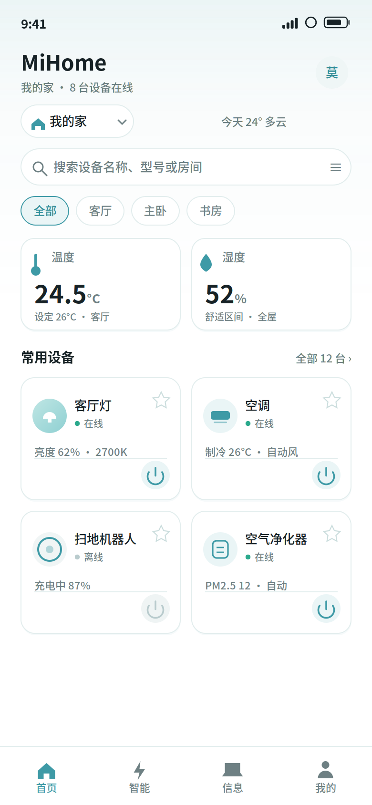
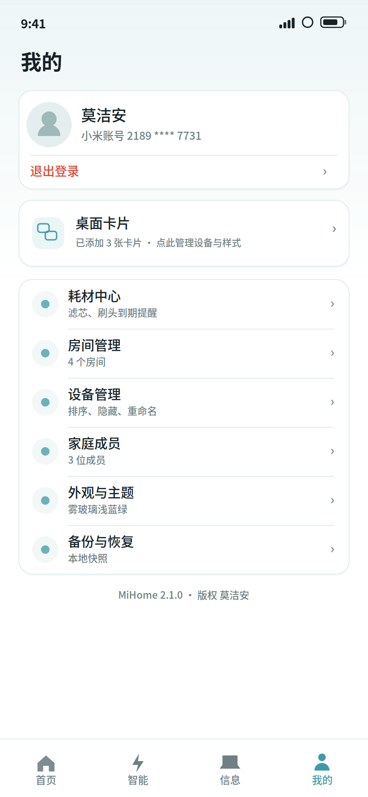
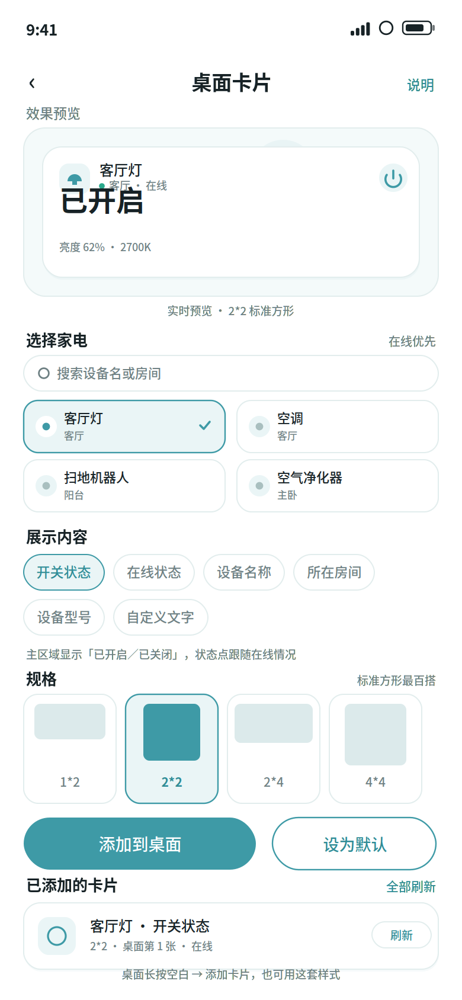
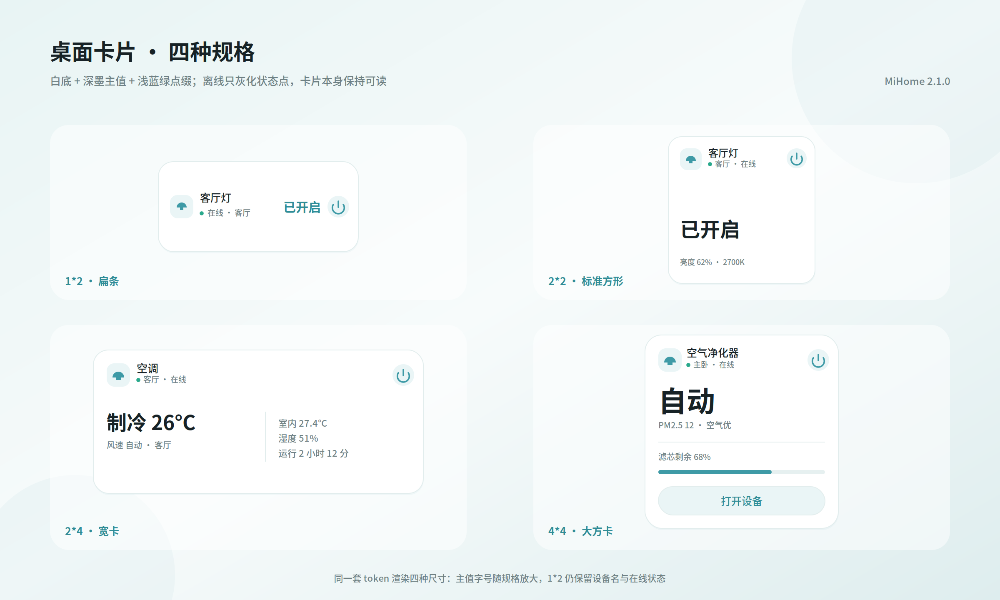
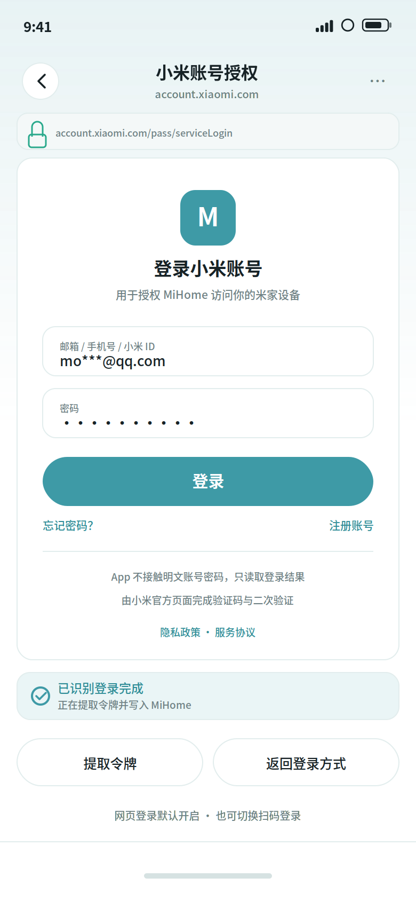
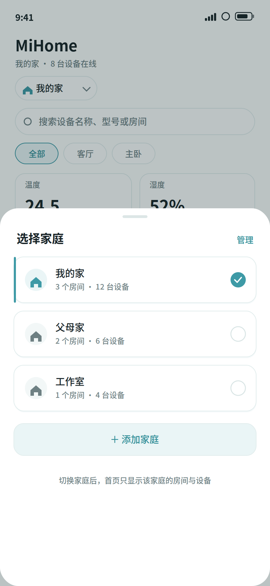

包名 com.mihome.client。用小米官方网页完成账号授权，App 不接触明文密码；
登录后管理家庭、房间与米家设备，并可把任意家电做成桌面卡片。
界面遵循 HarmonyOS 7 雾玻璃 · 浅蓝绿设计语言：纯白底、深墨字、轻描边。
首页、我的、桌面卡片管理中心 —— 三处主入口的当前视觉。



DesignTokens.ets）与页面结构绘制的界面预览图，
由 tools/gen_docs_previews.py 生成，与实际运行的布局、字号、配色一致；
不含真实账号与设备数据。
把一台家电钉在桌面上：看状态、点一下就能开关，四种规格共用一套 token。

| 内容项 | 主区域显示 | 适用场景 |
|---|---|---|
| 开关状态 | 已开启 / 已关闭 | 灯、插座、风扇等有电源属性的设备 |
| 在线状态 | 在线 / 离线 | 关注设备是否掉线的场景 |
| 设备名称 | 设备名 | 纯标识型卡片 |
| 所在房间 | 房间名或「未分配房间」 | 多房间布点 |
| 设备型号 | 型号字符串 | 设备台账 |
| 自定义文字 | 自定义文案，留空回落设备名 | 提示语、备注 |
postCardAction({action:'call'}) 拉起 App 执行开关，失败回滚并 Toast 提示。formProvider.updateForm 刷新所有卡片。用小米官方页面完成账号密码、图形验证码与二次验证，App 只读取登录结果。


小米登录成功后的回调页常常只剩一个 ok 字样。登录结束判定不依赖单一信号，
而是注入 __miSnapshot 定时读取页面 URL、标题、正文、document.cookie 与
extension-pragma，再由 onLoadIntercept / onPageEnd /
进度 100 / 500ms 轮询四路共同判定，任一命中即可提取令牌并写入 MijiaAuthData。
基座来自米居 MiJu / 鸿米家，网页登录能力为本工程融合进来的部分。
| 模块 | 能力 |
|---|---|
| 设备与控制 | 按 MIoT-Spec V2 动态渲染属性与动作；电源、亮度、色温、风速、模式等控件；下发失败回滚与提示。 |
| 实时状态 | 首页快捷开关 20s 轮询、详情页 15s 轮询，回页立即刷新；外部改动通过事件回读真值。 |
| 房间与家庭 | 家庭切换、房间分组、设备排序 / 隐藏 / 重命名、收藏。 |
| 智能与自动化 | 本地智能场景、定时任务、到期检查与提醒。 |
| 信息与提醒 | 云端消息、设备提醒、耗材到期（滤芯 / 刷头）。 |
| 桌面卡片 | 四种规格、六类展示内容、开关直控、批量刷新、默认样式。 |
| 外观 | HarmonyOS 7 雾玻璃浅蓝绿主题，字体与字号可调，沉浸式状态栏。 |
| 数据 | 本地快照备份与恢复、局域网设备发现。 |
Stage 模型，无路由框架依赖，能力按层拆在 entry/src/main/ets 下。
pages/HomePage.ets：首页 / 智能 / 信息 / 我的四个 tab，含家庭浮层与卡片配置面板。pages/CardServicePage.ets：桌面卡片管理中心。pages/LoginPage.ets + components/WebLoginView.ets：登录与网页授权。services/CardFormService.ets：卡片运行态查询、数据拼装、批量刷新。storage/CardConfigStore.ets / CardStateStore.ets：卡片配置与设备状态快照（preferences）。oauth/WebLoginService.ets：Cookie / pragma / URL 解析并写回鉴权数据。entryformability/MiHomeFormAbility.ets：onAddForm / onUpdateForm / onFormEvent，三级回落保证不空白。widget/pages/MiHomeDeviceCard.ets：按规格切换版式与字号。resources/base/profile/form_config.json：四种 dimension 声明。首页 / 管理中心选设备
↓ 写入配置
CardConfigStore（formId / default）
↓
CardStateStore（设备名称、房间、型号、在线、电源）
↓ buildCardData()
formBindingData → formProvider.updateForm(formId)
↓
MiHomeDeviceCard 渲染；点电源 → postCardAction(call)
↓
EntryAbility 解析 cardToggleDid → AppStorage.pendingCardToggleDid
↓
HomePage.consumePendingCardToggle() 执行开关并回写命令行工具链（Command Line Tools + hvigorw）即可产出签名 HAP。
# 1. 依赖
ohpm install
# 2. 自动递增 versionCode 并编译
python tools/auto_version.py
hvigorw assembleHap
# 3. 自签（需自备 p12 / cer / p7b）
java -jar $SDK/openharmony/toolchains/lib/hap-sign-tool.jar sign-app \
-mode localSign -signAlg SHA256withECDSA -keyAlias app \
-appCertFile signing/app-cert-chain.cer -profileFile signing/mihome.p7b \
-inFile entry/build/default/outputs/default/entry-default-unsigned.hap \
-keystoreFile signing/app.p12 \
-outFile outputs/MiHome-com.mihome.client-signed.hapcom.mihome.client 自动签名；
侧载步骤见 docs/侧载安装指南.md。
hdc tconn <设备IP>:5555
hdc file send outputs/MiHome-com.mihome.client-signed.hap /data/local/tmp/mihome.hap
hdc shell bm install -r -p /data/local/tmp/mihome.happython tools/gen_docs_previews.py：重新生成 docs/images 下的界面图。node verify/check_fusion.mjs：结构与关键实现自检（当前 78 项）。